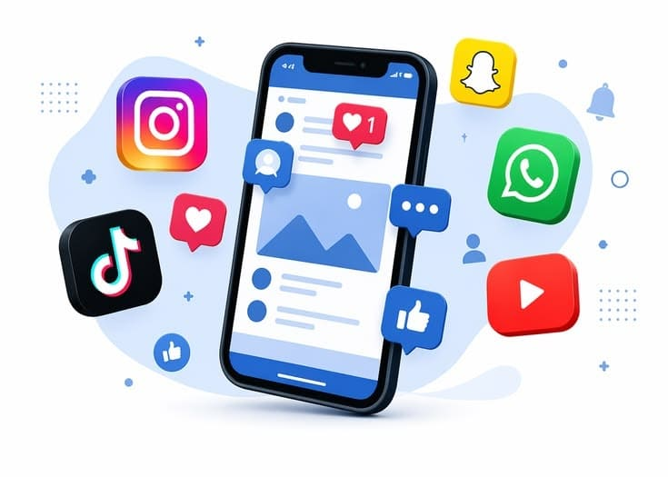

📖 WHAT IS SOCIAL MEDIA?

Social media is a digital platform that allows people to communicate, share information, create content, and interact with others through the internet. Today, social media has become an important part of everyday life, especially for teenagers. Some popular social media platforms include Instagram, TikTok, YouTube, and WhatsApp. Social media can be used for learning, finding information, communicating with friends and family, and showing creativity. However, if it is not used wisely, social media can also cause problems such as the spread of fake news, cyberbullying, excessive screen time, and privacy problems.
Because of this, using social media correctly is very important. Before uploading or sharing something, we should think about how it could affect ourselves and other people. We should also understand that something posted on the internet can be difficult to completely remove. Everything we post can become part of our digital footprint. By using social media responsibly, we can enjoy the benefits of technology without causing harm to ourselves or others.
💎 UNLOCK THE BENEFITS
Social media has many benefits when it is used properly. One of its biggest benefits is making communication easier. We can communicate with friends, family, or other people without being in the same place. Social media can also be a useful source of information and education. Many educational accounts share content about school subjects, languages, technology, sports, health, and many other topics. This allows people to learn in ways that can be interesting and easy to access.
Social media can also be used to develop creativity. People can create videos, designs, writing, photographs, or other types of content and share them with others. Therefore, social media does not only have to be used for entertainment. It can also be a place to show skills, discover new interests, and express ideas. Social media can also help us learn about events and information around us. However, we should always choose reliable information and avoid believing everything that appears on our feed.
⚒️ BENEFIT QUESTS
Hover over a skill to inspect it, then click to complete the quest!
⚔️ DIGITAL SAFETY QUESTS
There are several ways to use social media wisely. First, we should check whether information is true before sharing it. Fake news can spread very quickly and cause misunderstandings. We can compare information from several reliable sources before believing or sharing it. Second, we should protect our privacy by not sharing personal information such as our home address, phone number, passwords, or other important information with strangers online.
Third, we should use polite language when commenting or communicating with other people. Having different opinions is normal, but we should never insult, mock, or bully someone online. We should also respect other people's photographs, ideas, and creative work. If we want to use someone else's work, we should give proper credit. Fourth, we should manage our screen time. Spending too much time on social media can interfere with studying, sleeping, exercising, and spending time with family and friends in real life.
We should also be careful when receiving friend requests or messages from people we do not know. Not every account on the internet represents a person's real identity. If we find harmful or inappropriate content, we can report it to the platform and ask a trusted adult for help. By being careful and responsible, we can make our experience on social media safer and more positive.
📜 QUEST BOARD
Click each quest to complete it and earn XP!
🏆 QUEST COMPLETE!
Social media is a technology that provides many benefits in our everyday lives. We can use it to communicate, learn, find information, and develop creativity. However, these benefits can only be enjoyed when we use social media responsibly. We should think before uploading something, check information before sharing it, protect our privacy, respect other people, and manage our screen time.
As social media users, we are responsible for the things we do in the digital world. Everything we upload and share can become part of our digital footprint. Therefore, we should become smart, respectful, and responsible digital citizens. We should use social media for positive and useful purposes instead of spreading hate or information that has not been proven to be true. When we use technology wisely, social media can help us learn, grow, communicate, and make a positive impact on the people around us.
ACHIEVEMENT UNLOCKED!
RESPONSIBLE DIGITAL CITIZEN
PLAYER STATISTICS
QUESTS COMPLETED: 0
TOTAL XP: 0